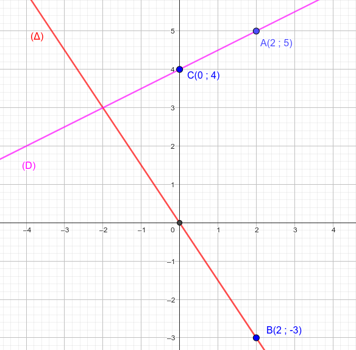

$1)\;$Soit $f$ une fonction où : $\;f(x) = -\dfrac32x$ .
$a.\;$Calculer l'image de $2$ par la fonction $f$ .
$b.\;$ Tracer $(\Delta)$ la représentation graphique de la fonction $f$ dans un repère orthonormé $\ro$ .
$2)\;$Soit $g$ une fonction où : $\;g(x) = \dfrac12x+b\;$ et $\;g(2)=5$.
$a.\;$Déterminer l'expression de la fonction $g$ .
$b.\;$ Déterminer $a$ sachant que : $g(a)=3$ .
$c.\;$ Tracer $(D)$ la représentation graphique de la fonction $g$ dans un repère orthonormé $\ro$ .
$d.\;$ Le point $H(12;10)$ appartient-il à $(D)$ ?
$1)\;$ Partie $1$
$a.\quad f(2)=-\dfrac32\times 2 = -3$
$b.\;$ Dans la deuxième partie .
$2)\;$ Partie $2$
$a.\;$On a : $$ \begin{aligned} g(2)=5 &\so \dfrac12 \times 2 + b = 5 \\ &\so 1 + b = 5 \\ &\so b = 5 - 1 \\ &\so b = 4 \\ \end{aligned} $$ Donc $\quad g(x)=\dfrac12 x + 4$ .
$b.\;$On a : $$ \begin{aligned} g(a)=3 &\so \dfrac12 a + 4 = 3 \\ &\so \dfrac12 a = 3 - 4 \\ &\so \dfrac12 a = -1 \\ &\so a = -1 \times 2 \\ &\so a = -2 \\ \end{aligned} $$
$c.\;$ Représentations graphiques :
$$ \begin{aligned} g(2)&=5 \so A\pr{2\;;\;5}\in \pr{D} \\ f(2)&=-3 \so B\pr{2\;;\;-3}\in \pr{\Delta} \\ g(0)&=4 \so C\pr{0\;;\;-45}\in \pr{D} \end{aligned} $$ $b.\;$On a : $$ \begin{aligned} g(12)&= \dfrac12 \times 12 + 4 \\ &= 6 + 4 \\ &= 10 \end{aligned} $$ Donc $\;H\pr{12\;;\;10}\in \pr{D}$